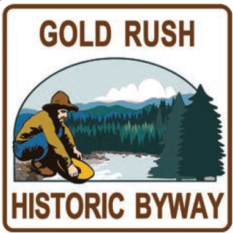

Rich in scenery, history, and wildlife, the route along Idaho 11 begins
in Greer at the junction of U.S. 12 with an easy climb up the Greer
Grade, providing a breathtaking panoramic view of the Clearwater
Valley At the crest of the mountain lie the beautiful rolling fields of
grains and grasses cultivated by local farmers, Just down the road is
the historic town of Weippe, not far from where members of the Nez
Perce Tribe met and fed starving members of Lewis and Clark's Corps
of Discovery in 1805.
Minutes later, the scenery changes again, as the vast fields transform
into a lush forest thick with wildlife. Nestled among the trees is the
town of Pierce, where early pioneers discovered gold in Idaho for the
first time. It also boasts the state's inaugural government building,
the old Shoshone County Courthouse. Other attractions include a
logging museum, the city library's artifact collection from the
adventures of Chinese miners in the area, and five more historical
sites featured along the byway.
Twelve miles north of Pierce is the village of Headquarters, marking
the end of the Gold Rush Historic Byway and the beginning of the
area's other "old mine" - the majestic and seemingly endless
Clearwater National Forest.